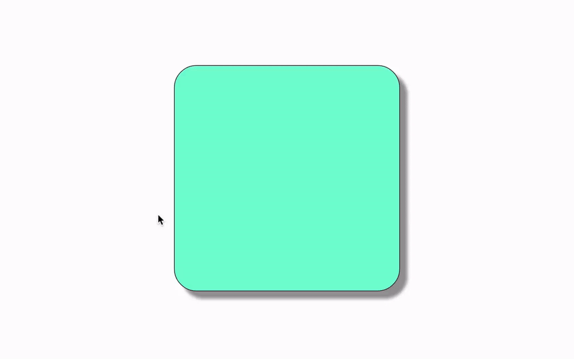

CSS Transitions
Lesson
Learning Objectives
Students will:
- Be able to identify the CSS attributes that allow for smooth transition effects
- Be able to implement a simple transition on an HTML element using CSS

CSS Transitions are an excellent way to add some smoothing
effects to your web page. While it's nice that we can change
styles based on an element's state (with the pseudo
selectors :hover, :active, etc.),
it can sometimes be a bit jarring when the effect happens
immediately upon hovering, or clicking, etc.
Enter CSS Transitions. Transitions allow us to slow down the time it takes to transition from one style to another. We can specify how long the transition should take, which properties should be affected by the slower transition, and what kind of transition timing style it should take.
Example
We'll just be working with a simple box in our HTML:
<div class="box"></div>
And add some basic styling to the box and change a few things when we're hovering on the box:
.box {
width: 300px;
height: 300px;
background-color: aquamarine;
margin: auto;
border: 1px solid #333;
box-shadow: 10px 10px 5px 0 #999;
border-radius: 10%;
}
.box:hover {
box-shadow: none;
border-radius: 0;
background-color: cyan;
}
With this box, the :hover state is triggered
the instant the mouse hovers on the box, and instantaneously
applies the new hover styles:

But we want the transition from the regular state to the hover state to be a bit more fluid and smooth. Time for transitions!
Transition options
CSS 3 gives us a number of properties that help us create transition effects between an element's state. The four transition properties are:
transition-propertytransition-durationtransition-timing-functiontransition-delay
transition-property
The CSS property called
transition-property allows us to pick and
choose which of the CSS properties we want to transition
smoothly. In the above example, we could decide to
transition the background shadow to disappear slowly over
perhaps 2 seconds, but make the color change immediately
upon hovering.
With transition-property, we simply write the
name of each CSS property we want to transition with commas
in between each name:
.box {
...
transition-property: box-shadow, border-radius, background-color;
}
However, in this instance we're simply re-writing
all of the properties we added on our
:hover class. For these instances, CSS provides
the transition-property: all option.
If you're following along, you may notice that nothing seems
to have changed! That's because we also need, by necessity,
to include the transition-duration property,
otherwise it will still transition instantly.
transition-duration
This property simply tells the transition how long it should take to complete. This is what makes the magic work:
.box {
...
transition-property: all;
transition-duration: 1s;
}
Now we have a working transition! There are a few other options given to us that are worth mentioning before finishing up
transition-timing-function
The transition-timing-function is a way to
change the style of the transition from one state to the
next. They're all pretty similar and mostly exist to add a
small touch of design to the animated transitions. The best
way to see the difference between all the options is to
check out
this site's example
We'll add
transition-timing-function: ease-in-out to our
CSS:
.box {
...
transition-property: all;
transition-duration: 1s;
transition-timing-function: ease-in-out;
}
On to the last transition property
transition-delay
This one simply tells the CSS how long to wait before even
beginning the transition. This one is pretty
straightforward, as you would simply add
transition-delay: 0.1s to your CSS if you
wanted it to wait for a tenth of a second before ever
executing the transition.
If you're going to use this property, we'd recommend keeping the delay pretty short. Otherwise it can make your site seem slower than it really is.
Shortcut transition property
Like many other properties in CSS, there is a shortcut that
allows us to define the transition-property,
transition-duration,
transition-timing-function, and
transition-delay properties all together. It's
called simply transition, and goes in this
order:
transition: [transition-property] [transition-duration] [transition-timing-function] [transition-delay];
The square brackets [] simply indicate that
they are all optional; you don't actually type in square
brackets. It is very common to see something like
the following in a site's CSS:
transition: all 0.5s ease-in-out;
That's a TON easier than writing out each one individually!
You can still put your separate
transition-propertys in there instead of
all and it will still work.
Cross-browser compatibility
CSS transition properties are still not used
the exact same between different browsers. For this, there
are the typical "vendor prefixes" that you should use when
you decide to use a transition in your CSS:
-webkit-transition: all 1s ease-in-out;
-moz-transition: all 0.5s ease-in-out;
-o-transition: all 0.5s ease-in-out;
transition: all 0.5s ease-in-out;
Conclusion
Here's the final code:
.box {
width: 300px;
height: 300px;
background-color: aquamarine;
margin: auto;
border: 1px solid #333;
box-shadow: 10px 10px 5px 0 #999;
border-radius: 10%;
-webkit-transition: all 1s ease-in-out;
-moz-transition: all 0.5s ease-in-out;
-o-transition: all 0.5s ease-in-out;
transition: all 0.5s ease-in-out;
}
.box:hover {
box-shadow: none;
border-radius: 0;
background-color: cyan;
}
And the final result:
